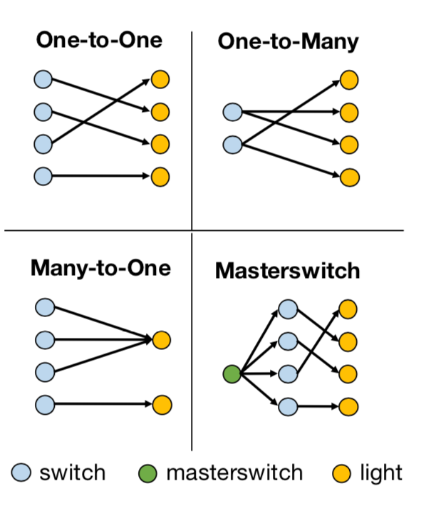
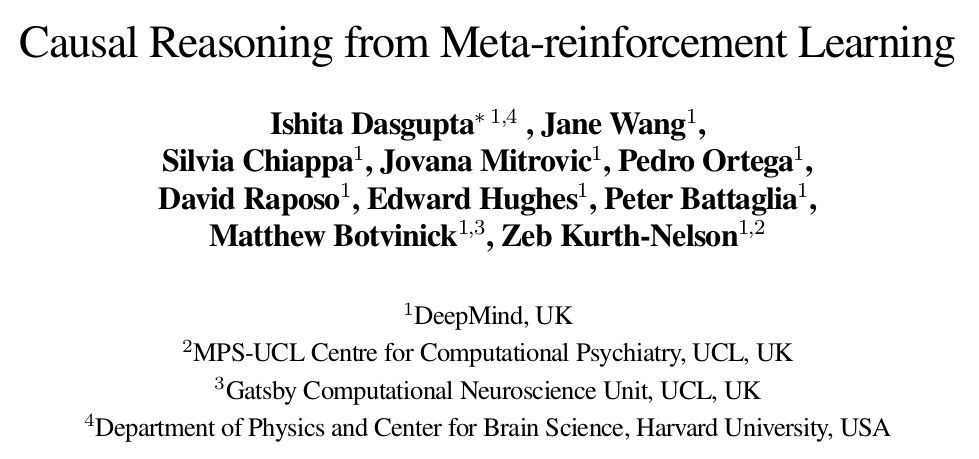
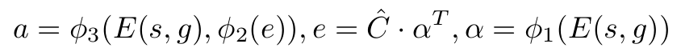

上篇：换个思路实现人工智能: 在视觉环境中用因果归纳完成目标导向的任务——因果归纳模型
系列第一篇：换个思路实现人工智能: 在视觉环境中用因果归纳完成目标导向的任务(上)
今天我们来说一说《CAUSAL INDUCTION FROM VISUAL OBSERVATIONS FOR GOAL DIRECTED TASKS》实验中策略学习模型的部分。这篇是这篇论文的终篇。终于从坑里爬出来啦。
官方源代码地址：
https://github.com/StanfordVL/causal_induction
策略学习模型(Learning Goal-Conditioned Policies)
python3 learn_planner.py --horizon 7 --num 7 --fixed-goal 0 --structure one_to_one --method trajFi --seen 10 --images 1 --data-dir output/
先回顾一下各个参数的意思：

horizon是上图中H的值，num是开关或灯的数量，–fixed-goal是指学习是否是goal conditioned，如果–fixed-goal=0，那表示有多个目标，是goal-conditioned。structure是开关和灯的控制模式，有如下四类：

每一类都可以组合出非常多不同的因果关系，比如说One-to-One这种情况，如果有七组开关和灯，那么开关和灯之间可以有5040种不同的因果关系。在训练因果模型的过程中，给的训练数据会包含一些因果关系，最后需要测试训练好的agent在它从未见过的因果关系上的效果。seen这个参数用于设定参与因果归纳模型训练的因果关系的数量，在这篇论文中，seen这个值会被设为10，50，100和500来做实验。images这个参数如果设定为1，表示因果模型训练的输入是场景图片，而如果设为0，则因果模型的训练输入是灯的状态向量。data_dir，数据的存储路径。
method是这篇最重要的一个参数，在这篇，method分三大类，第一类是gt，gt是ground truth的意思，即参与策略模型训练的因果关系用的是真实的因果关系，而不是通过因果归纳模型得到的因果关系。第二类则有用因果归纳模型，和上篇的对应是，trajF为TCIN，trajFia是ICIN，trajFi为ICIN (No Attn)，即参与策略模型训练的因果关系是由因果模型推断出来的，而不是绝对正确的。第三类是trajlstm，是2019年在ICLR发表的一篇解决相同问题的方法《Causal Reasoning from Meta-reinforcement Learning》，用的是lstm网络，基本思路是先将所有开关操作一遍，并将场景图和操作输入网络，期望网络能归纳出因果关系，之后再输入场景图和目标图，得到策略。

memsize = 10000
memory = {'state':[], 'graph':[], 'action':[]}
memory是训练过程中记录信息的，其中state记录的是当前场景图和目标场景图，graph记录的是因果向量，action记录的是接下来应该要执行的动作，这里要注意，可以把这里的记录的action看成是ground truth，而这个action并不一定会被策略选中，和下一步真正执行的action又是不同的。而memsize则用来控制memory的长度。
策略学习模型调用：
if args.method=='trajlstm':
pol = BCPolicyMemory(args.num, args.structure).cuda()
else:
pol = BCPolicy(args.num, args.structure, True).cuda()
optimizer = th.optim.Adam(pol.parameters(), lr=0.0001)
trajlstm用BCPolicyMemory做策略学习模型，其他用BCPolicy做策略学习模型，这两个策略模型相似度高，可以一起看:
1. BCPolicy和BCPolicyMemory： BCPloclicy要实现的是下面这个策略学习网络，结合了因果归纳和Attention机制，而BCPolicyMemory是一个基于LSTM的策略学习网络。

1.1 初始化 两个网络初始化部分不相同，上图是BCPolicy的网络结构图，有attention机制，BCPolicyMemory没有：
def __init__(self, num, structure, attention = False): #BCPolicy
def __init__(self, num, structure): #BCPolicyMemory
定义了三个相同的卷积池化激励层和一个全连接层，这部分主要用来做图的encoding，将目标场景图和状态场景图转换成一个向量：
self.encoder_conv = nn.Sequential(
nn.Conv2d(6, 8, kernel_size=3, stride=1, padding=1), # 32×32×6->32×32×8
nn.MaxPool2d(kernel_size=2, stride=2), # 32×32×8->16×16×8
nn.ReLU(inplace=True),)
self.encoder_conv2 = nn.Sequential(
nn.Conv2d(8, 16, kernel_size=3, stride=1, padding=1), # 16×16×8->16×16×16
nn.MaxPool2d(kernel_size=2, stride=2), # 16×16×16->8×8×16
nn.ReLU(inplace=True),)
self.encoder_conv3 = nn.Sequential(
nn.Conv2d(16, 32, kernel_size=3, stride=1, padding=1), # 8×8×16->8×8×32
nn.MaxPool2d(kernel_size=2, stride=2), # 8×8×32->4×4×32
nn.ReLU(inplace=True),)
self.fc1 = nn.Linear(4 * 4 * 32, 128) # 4×4×32->128
BCPolicy的其他部分，不全，只贴有部分：
self.attlayer = nn.Linear(128, num) # 128->num
self.softmax = nn.Softmax(dim=-1) # 对最后那个维度做Softmax
if structure == "masterswitch":
self.ins = self.num + 1 # masterswitch的gt向量比其他结构的gt向量长num,最后num个位置记录的是master switch的位置。
else:
self.ins = self.num
if not self.att: # 如果没有attention机制
if structure == "masterswitch":
self.gfc1 = nn.Linear(num*num + num, 128) # num*(num+1) -> 128
else:
self.gfc1 = nn.Linear(num*num, 128) # num*num->128
else:
self.gfc1 = nn.Linear(self.num, 128) # num->128
if self.structure == "masterswitch":
self.fc2 = nn.Linear(256+args.num, 64) # 256+num ->64
else:
self.fc2 = nn.Linear(256, 64) # 256->64
self.fc5 = nn.Linear(64, num) # 64 -> num
self.softmax = nn.Softmax(dim=-1) # 对最后一维做softmax]
masterswitch的gt向量比其他结构的gt向量长num个，记录的是master switch的位置。
BCPolicyMemory其他部分：
self.aenc = nn.Linear(num+1, 128) # num+1 -> 128
self.lstm = nn.LSTMCell(256, 256)
self.fc2 = nn.Linear(256, 64) # 256->64
self.fc5 = nn.Linear(64, num) # 64->num
这段代码的核心是lstm的定义，用的是LSTMCell，这篇就不提LSTM的网络结构和特点了，只说一下，pytorch中除了LSTMCell，还有一个LSTM，可以直接构造多层LSTM。那LSTMCell不能直接构造多层结构，即一个Cell，第一个参数是feature的长度，第二个参数是记忆单元和隐藏单元hidden的长度。
1.2 BCPolicy和BCPolicyMemory前向传播forward部分：
不同：函数入口
def forward(self, x, gr): # BCPolicy
def forward(self, x, a, hidden): # BCPolicyMemory
两个网络的输入x都是goal image和current image组合的32×32×6的tensor。gr是开关和灯的因果关系向量，当method是gt的时候，gr是真实的因果关系向量，是groud truth。而当method是trajF，trajFia，或trajFi时，gr则是因果归纳模型归纳出的因果关系向量。
当method是trajlstm时，用的策略模型是BCPolicyMemory，其中x是场景图，a是动作，hidden则是LSTM的记忆单元和隐藏单元。
相同：如网络结构图，goal image和current image组合的32×32×6的tensor x都会经过一个Observation Encoder输出e3,再经过全连接层输出encoding:
x = x.permute(0, 3, 1, 2).contiguous() # 维度换位，将通道维度移前
e1 = self.encoder_conv(x) # 32×32×6->16×16×8
e2 = self.encoder_conv2(e1) # 16×16×8->8×8×16
e3 = self.encoder_conv3(e2) # 8×8×16->4×4×32
e3 = e3.view(e3.size(0), -1) # 转成一维向量，前面是batchsize, 后面是向量长度
encoding = self.relu(self.fc1(e3)) # 4×4×32->128
BCPolicy的其他部分：
if self.att:
w = self.softmax(self.attlayer(encoding)) # 128->num, softmax
if self.structure == "masterswitch": # 将master switch的因果关系与其他因果关系的分开
ms = gr.view((-1, self.ins, self.num))[:, -1, :]
gr = gr.view((-1, self.ins, self.num))[:, :-1, :]
else:
gr = gr.view((-1, self.ins, self.num))
gr_sel = th.bmm(gr, w.view(w.size(0), -1, 1)) # 因果关系矩阵×状态和目标向量 ->num
gr_sel = gr_sel.squeeze(-1) # 若最后一维长度为1,消去
g1 = self.relu(self.gfc1(gr_sel)) # num->128
else:
g1 = self.relu(self.gfc1(gr)) # num*(num+1)-> 128 或者 num*num-> 128
if self.structure == "masterswitch":
eout = th.cat([g1, encoding, ms], 1) # 128 + 128 + num
else:
eout = th.cat([g1, encoding], 1) # 128 + 128
a = self.relu(self.fc2(eout)) # 256+num -> 64 或者 256 -> 64
a = self.fc5(a) # 64 -> num
return a
如果有attention机制，首先会让状态场景图和目标场景图融合生成的encoding经过一个全连接层，生成因果关系图的attention向量，和因果关系相乘，得到需要重点关注的因果关系，然后再转换成因果向量，和encoding融合后通过两层全连接层得到最后的动作向量。 归纳为公式，则是：

s是状态场景图，g是目标场景图，E对应的就是网络结构图中的Observation Encoder，φi是全连阶层，α是attention向量，Ĉ是因果归纳模型预测的因果关系，e是selected edges，a是模型提议的策略。
BCPolicyMemory其他部分：
ae = self.relu(self.aenc(a)) # num+1 -> 128
eout = th.cat([ae, encoding], 1) # 128+128->256
if hidden is None:
hidden = self.lstm(eout)
else:
hidden = self.lstm(eout, hidden) # （256，256）
a = self.relu(self.fc2(hidden[0])) # 256->64
a = self.fc5(a) # 64 -> num
return a, hidden
这里每次都会输入一个action向量，将其转换成128长的向量，然后再和128长的场景图向量拼接在一起组成一个256长的向量，最开始的时候hidden不做输入，之后就用上一次跑lstm产生的hidden来做输入，这里的hidden包含了lstm中的隐藏单元和记忆单元，接下来提取隐藏单元，通过两层全连接网络生成动作向量。
2. 策略训练代码： method有三大类，gt是一类，gt是ground truth的意思，也就是说参与策略模型训练的因果关系用的是真实的因果关系，而第二类method，trajF，trajFi，或trajFia，参与训练的因果关系则是因果模型计算得到的因果关系，不是真正的因果关系。第三类method是trajlstm，这个方法没有独立的因果归纳模型，但是其实有因果归纳的步骤。每一类都有一组训练代码，重合度很高，所以一起讲。
2.1 初始化环境：
三类method都是相同的
l = LightEnv(args.horizon*2, args.num, "gt", args.structure, gc, filename=fname, seen = args.seen)
l.keep_struct = False
和之前初始化环境不同的是horizon位置上的输入变成了2×args.horizon，决定了l.step()的最长步数。cond的输入变成了”gt”，l._get_obs()函数输出的状态向量o会包含l.gt，即现在这个环境使用的因果向量，而l._get_obs(images=True)只会返回当前因果和开关状态下的场景图。如果l.keep_struct = False，那么每次l.reset()都有可能会改变因果关系
当method是trajlstm是，memsize设定为了100。
memsize = 100
2.2 策略训练训练：
相同的部分：
for mep in range(100000):
l.train = True
l.reset()
imobs = l._get_obs(images=True)
goalim = l.goalim
goal = l.goal
obs = np.zeros((args.num))
l.train为真，那么l.reset()的时候，会从训练模型可见的那些因果关系中选择一个因果关系来训练，seen为训练模型过程中可见的因果关系的数量，这部分详细内容请参考换个思路实现人工智能: 在视觉环境中用因果归纳完成目标导向的任务——生成数据。imobs获得的是l在reset之后获得的新的场景图。goalim是目标场景图，goal是灯的状态向量。
不同的部分： 当method是trajF，trajFi，或trajFia时：
## Predict Graph
buf = induction(args.structure,args.num, args.horizon, l, images=args.images)
traj = buf.flatten()
pred = predict(buf, FN, args.structure, args.num)
l.state = np.zeros((args.num))
induction函数与因果模型训练的代码重合度很高，就不逐行解析了，这部分主要功能就是将每个开关都开一遍，然后记录下场景图和之后要执行的动作，存入buf中，而当结构是masterswitch的时候，稍微复杂了一些，先将所有开关开一遍并记录下场景图和动作，直到找到master switch为止，再将剩下的开关逐个开一遍，记录下场景图和之后要执行的动作。predict中输入的FN是之前训练好的因果归纳模型，输出则是因果关系向量。
当method是trajlstm时：
memory = {'state':[], 'graph':[], 'action':[]}
hidden = None
## Get interction trajectory
buf = induction(args.structure,args.num, args.horizon, l, images=args.images)
memory['graph'].append(buf)
for w in range(buf.shape[0]):
states = buf[w, :32*32*3].reshape(1, 32, 32, 3)
sgg = np.zeros_like(states)
states = np.concatenate([states, sgg], -1)
actions = buf[w, 32*32*3:].reshape(1, -1)
act, hidden = pol(th.FloatTensor(states).cuda(), th.FloatTensor(actions).cuda(), hidden)
l.state = np.zeros((args.num))
之前说过induction函数，即把所有的开关按顺序开一遍，记录场景图和之后的动作，在trajlstm这个方法中，直接将这样产生的buf存入memeory中的graph部分，意思很明显了，即buf里面有因果图。接下来就是跑lstmcell，将这个开关所有灯的行为依次输入lstm，states是当下的场景图，而actions是接下来要做的动作，输出也是接下来要做的动作。这部分的主要功能应该是让hidden中有灯和开关的因果关系。 每个episode:
for k in range(args.horizon*2):
g = np.abs(goal - obs[:args.num]) # 目标向量-状态向量
st = np.concatenate([imobs, goalim], 2) #32×32×6
sss = 1.0*(np.dot(g, l.aj.T).T > 0.5)
if args.structure == "masterswitch":
sss[l.ms] = 0
if sss.max() == 0: #如果没有需要改变的开关，就结束该过程
break
action = np.argmax(sss) #应该要执行的action
if args.structure == "masterswitch":
if obs[:5].max() == 0: #里面的参数5似乎应该改成args.num
action = l.ms #首先要打开masterswitch的开关
memory['state'].append(st)
memory['action'].append(action)
g是目标向量减去状态向量，表示要达到目标向量需要做出的改变。st则融合了当前场景图和目标场景图，在通道维度上融合，因此融合后得到的st是32×32×6的结构。g是需要作出改变的灯向量，sss则是需要做出改变的开关向量。如果是masterswitch的状态，一开始除了master switch之外没有开关再需要改变了，那么过程不需要再进行下去。如果有开关需要改变，则一开始要打开master switch，否则其他开关开了也没用。这里obs[:5]中的5似乎应该改成args.num。这边的action则是应该要被选择的action。
接下来一段代码，三种方法不同：
- method == “gt”:
memory['graph'].append(l.gt.flatten())
if np.random.uniform() < 0.3:
action = np.random.randint(args.num)
else:
graph = np.expand_dims(l.gt.flatten(), 0)
act = pol(th.FloatTensor(np.expand_dims(st, 0)).cuda(), th.FloatTensor(graph).cuda()) action = act[0].argmax() # 策略选择的action
当method是gt时，memory[‘graph’]存的是真实的因果关系向量。st和graph经过pol函数产生action向量，然后再取最佳action。这边是策略选择的最后会被执行的action。
在强化学习模型训练过程中，不会总去执行策略模型当下觉得最优的动作，也会随机选择一些动作，以便最后能找到最优的策略。
- method == “trajF”，”trajFi”，或”trajFia”
memory['graph'].append(pred.flatten())## Random Noise
if np.random.uniform() < 0.3:
action = np.random.randint(args.num)
else: graph = np.expand_dims(pred.flatten(), 0)
act = pol(th.FloatTensor(np.expand_dims(st, 0)).cuda(), th.FloatTensor(graph).cuda())
action = act[0].argmax()
这个循环内因果关系并不会变，所以graph可以放在这个循环外生成，没必要每次都产生一遍。
- method = “trajlstm”时：
## Policy Noise
if np.random.uniform() < 0.3:
action = np.random.randint(args.num)
else:
act, s_hidden = pol(th.FloatTensor(states).cuda(), th.FloatTensor(actions).cuda(), hidden)
action = act[0].argmax()
这段代码应该是写错了，每次都输入states和actions，并没有用到每次l.step之后的状态，也没有用到goal image，有点不合逻辑。因此，正确的应该是要将states替换成st，而actions替换成都是0的向量，因为这里是要去预测下一步的动作。
接下来一段三种方法相同：
obs, reward, done, info = l.step(action)
imobs = l._get_obs(images=True)
if done:
break
在环境中执行action，返回obs（更新灯的状态向量+目标向量+因果向量），reward（目标和状态的欧几里德距离的负值），done（达到目标或者步数超过限制则结束），info（灯的状态向量是否和目标一致），imobs（更新状态场景图），如果达到目标，或者步数超过限制，则结束该过程。
接下来，不同的部分，当method是gt，trajF，trajFi，或trajFia时：
if args.structure == "masterswitch":
if sss[l.ms]:
st = np.concatenate([imobs, goalim], 2)
memory['state'].append(st)
#--------------下面代码是method不同，不同的部分-------------
# 当method是“gt”
memory['graph'].append(l.gt.flatten())
# 当method是"trajF"，"trajFi"，或"trajFia"时
memory['graph'].append(pred.flatten())
#---------------------------------------------
memory['action'].append(l.ms)
obs, reward, done, info = l.step(l.ms)
memory['state'] = memory['state'][-memsize:]
memory['graph'] = memory['graph'][-memsize:]
memory['action'] = memory['action'][-memsize:]
for _ in range(1):
loss = train_bc(memory, pol, optimizer)
这段代码有两点很让人疑惑：
-
首先是masterswitch的部分，按照代码的意思是，如果结构是masterswitch且master switch被打开了，那么则需要将主开关关上。
-
不论因果结构是什么样的，在最后一个action之后的状态都没有被记录。可能是没有下一步动作的话，场景图记录下来也没有训练价值。
这部分有个函数train_bc：
def train_bc(memory, policy, opt):
'''Train Imitation policy'''
if len(memory['state']) < 50:
return
opt.zero_grad() # 梯度清零，不清零的话可以写梯度累加的代码，适合GPU配置低，显存小的状况。
choices = np.random.choice(len(memory['state']), 32).astype(np.int32).tolist()
states = [memory['state'][c] for c in choices]
graphs = [memory['graph'][c] for c in choices]
actions = [memory['action'][c] for c in choices]
states = th.FloatTensor(states).cuda()
graphs = th.FloatTensor(graphs).cuda()
actions = th.LongTensor(actions).cuda() # 模型觉得最优的动作
pred_acts = policy(states, graphs)
# loss = ((pred_acts -actions)**2).sum(1).mean()
celoss = nn.CrossEntropyLoss()
loss = celoss(pred_acts, actions)
l = loss.cpu().detach().numpy()
loss.backward()
opt.step()
return l
zero_grad()是用于梯度清零，不清零的话梯度就会累加，在一些实验中，batch size设置的大，显存会不够用，所以可以不清零梯度，多累加几个batch size，比如将batch size设置为100，而梯度累加八次再清零和将batch size直接设置为800，每次都梯度清零，效果是一样的。
在这个实验中，每次从memory中随机选择32个来计算梯度。
当method是”trajlstm”时：
if args.structure == "masterswitch":
if sss[l.ms]:
st = np.concatenate([imobs, goalim], 2)
memory['state'].append(st)
memory['action'].append(l.ms)
obs, reward, done, info = l.step(l.ms)
if len(memory['state']) != 0:
trajs.append(memory)
trajs = trajs[-memsize:]
for _ in range(1):
loss = train_bclstm(trajs, pol, optimizer)
这里依然是，如果结构是masterswitch且主开关开着，就需要多走一步，将主开关关上。接下来看train_bclstm这个函数，trajs是最近的memsize个开关灯的过程，一开始会小于memsize个。pol是生成action的模型。下面贴了一部分代码，掐头去尾。
choices = np.random.choice(len(trajs), 4).astype(np.int32).tolist()
for t in choices:
memory = trajs[t]
hidden = None
## Feed interaction trajectory through policy with memory
buf = memory['graph'][0]
for w in range(buf.shape[0]):
states = buf[w, :32*32*3].reshape(1, 32, 32, 3)
sgg = np.zeros_like(states)
states = np.concatenate([states, sgg], -1)
actions = buf[w, 32*32*3:].reshape(1, -1)
num_acts = actions.shape
act, hidden = pol(th.FloatTensor(states).cuda(), th.FloatTensor(actions).cuda(), hidden)
states = np.array(memory['state'])
actions = np.array(memory['action'])
preds = []
for w in range(states.shape[0]):
a = np.zeros(num_acts)
pred_acts, hidden = pol(th.FloatTensor(states[w:w+1]).cuda(), th.FloatTensor(a).cuda(), hidden)
preds.append(pred_acts)
preds = th.cat(preds, 0)
loss = celoss(preds, th.LongTensor(actions).cuda())
totalloss += loss
前半段代码中的循环，应当是为了得到hidden的值，理想状况，我们期待这个值记录着接下来要做的动作，和灯和开关之间的因果关系。而接下来一个循环，则是要生成理想状况下应当产生的动作组和在该策略模型下产生的动作组的差异。损失函数用的是交叉熵。
接下来是最后一段代码，三个方法有不同的部分：
if mep % 1000 == 0:
print("Episode", mep, "Loss:" , loss )
# method是“gt”时：
trainsc = eval_bc(pol, l, True, args=args)
testsc = eval_bc(pol, l, False, args=args)
# 当method是"trajF"，"trajFi"，或"trajFia"时：
trainsc = eval_bc(pol, l, True, f=FN, args=args)
testsc = eval_bc(pol, l, False, f=FN, args=args)
# 当method是"trajlstm"时：
trainsc = eval_bclstm(pol, l, True, args=args)
testsc = eval_bclstm(pol, l, False, args=args)
successes.append(l._is_success(obs))
print(np.mean(successes))
要是之前的代码都看懂了，eval_bc和eval_bclstm很容易懂，就不专门贴出来了，输入pol，用来计算action，而第三个参数输入True，表示用用于训练的因果关系来测试模型效果，输入False，表示用用于测试的因果关系来测试模型效果，用于测试的因果关系是训练模型过程中，模型没有接触过的因果关系。
3. 实验结果

这个图表现的是策略学习模型的实验结果，Memory指的是trajlstm，Oracle是gt，其他分别对应不同的因果归纳模型，毫无疑问，所有实验中，Oracle的效果是最好的，因为因果关系用的是ground truth。接下来就是用ICIN(Ours)了，即带attention的因果归纳模型。值得注意的是，这个实验结果用的是因果归纳模型和策略学习模型没有见过的因果关系来测试的。至于Memory和Memory(RL/Low Dim)的区别，在代码中没有体现出来，trajlstm只有一个版本。
另外，这是当switch的数量是5，训练时可见的因果关系为50时，网络有attention和没有attention的区别。

记：
-
文章并没有把所有代码都贴上了，只贴了觉得有必要说明的，另外代码中有很多不必要的部分，可能是作者测试的时候遗留的，因此有些代码稍作了修改。
-
trajlstm的代码应该是写错了。
-
obs[:5]中的5似乎应该改成args.num。
上篇：换个思路实现人工智能: 在视觉环境中用因果归纳完成目标导向的任务——因果归纳模型
系列第一篇：换个思路实现人工智能: 在视觉环境中用因果归纳完成目标导向的任务(上)
参考论文：
Suraj Nair, Yuke Zhu, Silvio Savarese, Li Fei-Fei, Stanford University, CAUSAL INDUCTION FROM VISUAL OBSERVATIONS FOR GOAL DIRECTED TASKS, 2019
参考代码：
https://github.com/StanfordVL/causal_induction
Comments